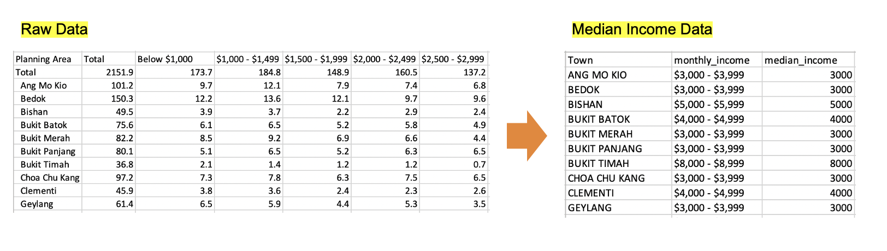
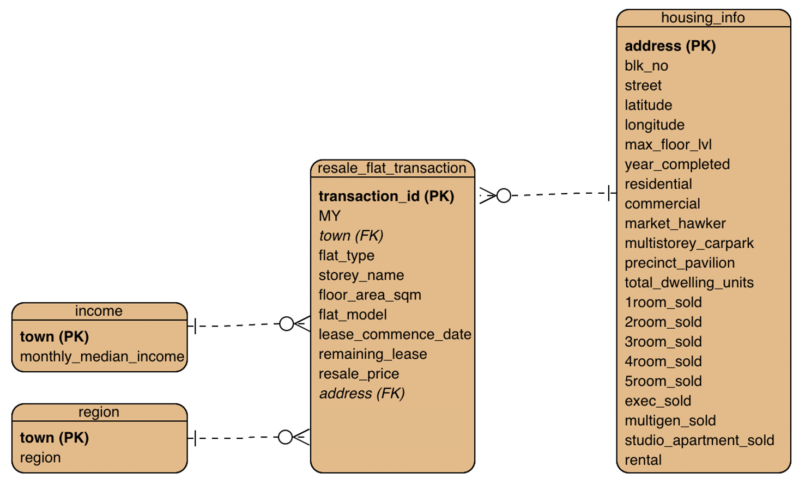
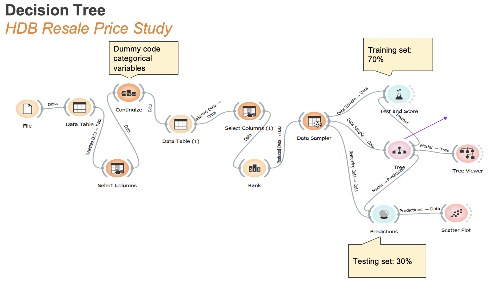
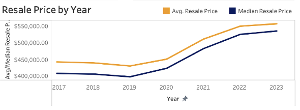
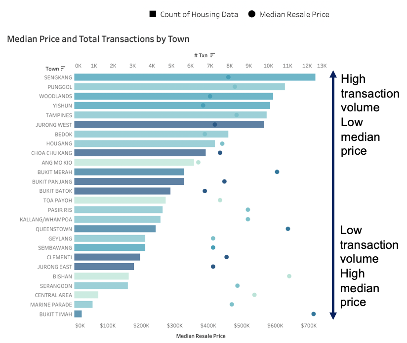
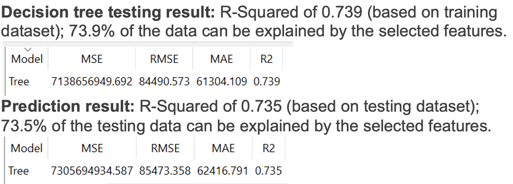

HDB RESALE FLAT DEMAND & PRICE ANALYSIS
Factors affecting the price and demand of Singapore HDB resale flat.

Background
Singapore’s public housing market is facing a strong demand even though there is an interruption in the supply and rising mortgage rates . The supply of BTO flats is struggling to meet the rising demand for housing due to the COVID-19 pandemic, which delays the construction progress of BTO flats. This has also resulted in the price and rental of property hitting a record high in 2022.
With the increasing demand for Singapore’s resale HDB flats, homeowners and buyers would need to plan ahead when they are selling or buying a resale flat. Timing the market is important for both homeowners and buyers to ensure the resale flat is transacted at market value and at a reasonable or affordable price for the buyers. Hence, this project was done to understand the trends of the HDB resale flat market in Singapore.
Data
HDB Resale Transaction Data
Data was retrieved from Singapore public data repository, containing data from January 2017 to February 2023. Data cleaning was done and both the complete script and cleaned data can be found on my GitHub page.
Existing HDB Information
Data was also retrieved from Singapore public data repository, containing the unique list of existing HDB property in Singapore and the number of each type of units in the property being built since 1970. Latitude and longitude data was obtained using OneMap API based on the address column in this table, script can be found here.
Region
Data was retrieved from NEA website, containing the existing towns in Singapore and the region it was mapped into (North, South, West, East, Central).
Median Income
Data was retrieved from Singstat containing the number of population at different income range from all regions. Median income data was obtained based on the income range at the median population number.
Methodology
Data Merging and Visualization
Data was imported to Tableau for data analysis and visualization. Data was merged according to the following schema, where resale transaction and existing HDB information tables were merged by address column, while income, region, and resale transaction tables were merged by town column.
Resale Price Prediction
Decision tree model was used to model the resale price as we aim to understand the factors affecting resale price and the white-box nature of the model would help to achieve this goal. Model training was done in open-source Orange software.
Observation
Increasing Resale Price
Based on yearly trend of the resale price, observed that since 2020 the price has been on a continuous increase, and starting to plateau in the recent years. This plateau coincides with the recent cooling measures implemented by the government in the late 2021 and2022 on the stricter loan criteria for hdb buyers and resellers.
Resale Price vs Number of Transactions
Median resale price and number of transactions was aggregated into town level, and it was observed that generally the price was inversely proportional to the number of transactions.
How median resale price and demand changed as the flat ages was also studied. Approximation was done to match the remaining lease years from HDB Resale Transaction and Existing HDB Information dataset, as the remaining lease from HDB Resale Transaction was based on the year of lease commencement while the one from Existing HDB Information dataset was based on the year project was completed.
- 95-91 remaining lease years: Observed significantly higher transaction volume relative to subsequent remaining lease period. This coincides with HDB Minimum Occupancy Period (MOP) of 5 years, after which a high number of new flats entering the resale market. The median resale price is relatively lower at this period as well, suspected to be due to this high supply.
- 90-70 remaining lease years: Median resale price was in general inversely proportional to the transaction volume. Transaction volume was consistent with the availability of each flat type in the market, as seen by the overlap in the distribution between the number of flats available (orange) and the number of past transactions. For flats availability, as the remaining lease data for each unit was not available, it was estimated based on the year completion date of each HDB block obtained from the housing info dataset, hence how the distribution of the number of flats available was slightly shifted to the right as in general there is a slight gap between the year of HDB block completion and the year of lease start.
- 69-60 remaining lease years: Observed depreciation in both transaction volume and median resale price starting at this range. However, depreciation was slower, suspected due to some buyers’ preference for older and larger HDB flats
- 59 and lesser remaining lease years: Steeper depreciation observed. Suspected to be due to lesser remaining lease as well as lesser CPF withdrawal limit for older flats.
Factors Affecting Resale Price
Based on decision tree model, after excluding correlated variables, the factors mostly affecting resale price are as follows, in descending order:
- Floor area
- Flat type
- Remaining lease
- Floor level (low/middle/high)
- Region
From training the resale model using these variables, R2 result of ~73% was obtained for both training and testing data.
Closing Remark
Factors affecting HDB resale price and number of transactions have been studied and resale price prediction decision tree model has been created with 73% explainable variance. This explainable variance might have been due to other factors, which were not available in the dataset use. In addition, decision tree model was chosen due to its explainability. However, there might be other black-box model which can better predict the resale price and this could be the subject of future studies.
Project was done as part of requirement for NUS Master of Enterprise Business Analytics course Analytics Project Management - with modification
Links
- GitHub repository
- Data cleaning script (Python)
- OneMap API coordinate retrieval script (Python)
- Tableau Dashboard
Dataset
Articles
- DPM Wong confident ramped-up supply, cooling measures will stabilise property market
- Rise in housing rents due to COVID-19 construction delays, demand amid pandemic recovery: Desmond Lee
- Old HDB Flats Are Being Snapped Up By Young Singaporeans, But Why?
- Terms and conditions for use of CPF under the CPF Housing Scheme
- HDB Cooling Measures (2021)
- HDB Cooling Measures (2022)